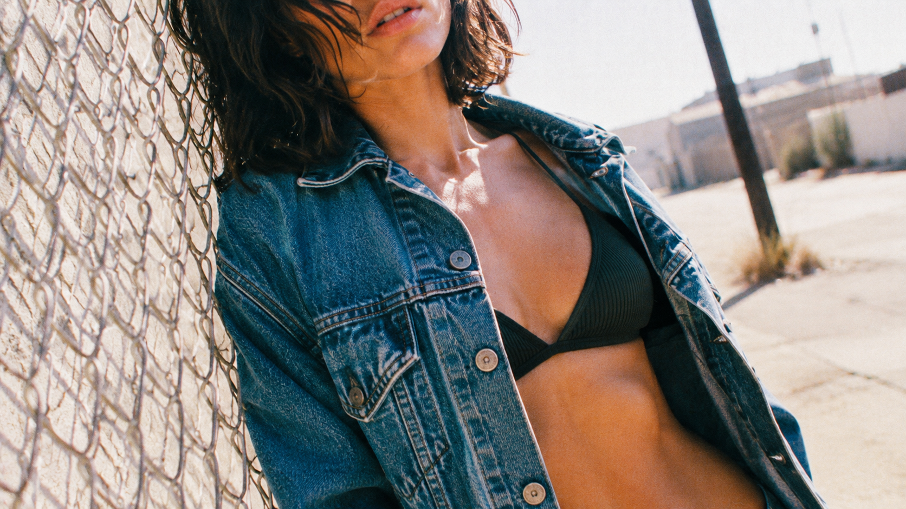
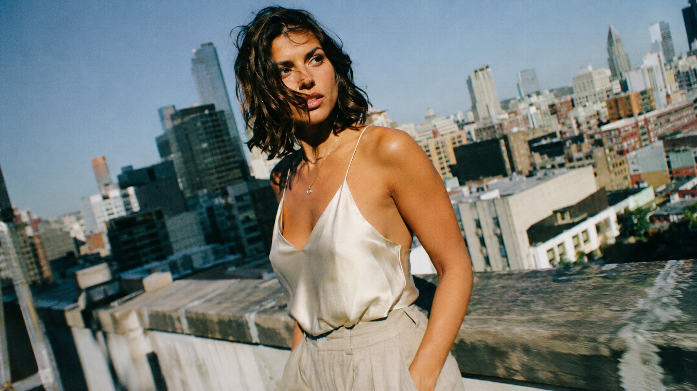
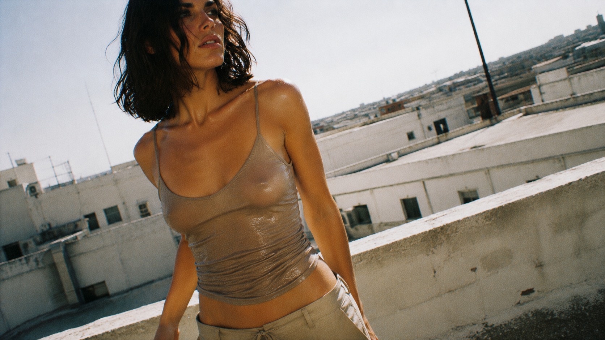

L'été qui n'est pas encore arrivé. Une collection tournée en plein jour, cheveux courts, gestes volés, lumière trop dure pour être posée. Pas de Malick ici — on est plus près d'Easy Rider : la caméra suit, elle ne compose pas.
The summer that hasn't happened yet. A collection shot in broad daylight, short hair, stolen gestures, light too hard to be posed. No Malick here — closer to Easy Rider: the camera follows, it doesn't compose.
CH.01
Surface Tension
rooftop, midday, flash cru contre le soleil
rooftop, midday, raw flash against the sun

14A
Grillage, chaleur qui tremble dans l'air. Cadre volé, visage à moitié hors champ.
Chain-link fence, heat haze trembling. Stolen frame, face half out of shot.

14B
Rooftop, skyline en arrière-plan, silhouette qui se retourne. Regard direct, cadrage volé.
Rooftop, skyline behind her, turning silhouette. Direct gaze, stolen framing.

14C
Rooftop, vent dans les cheveux, matière fine qui colle à la lumière. Flash brut, ombre dure sur la mâchoire.
Rooftop, wind in the hair, thin fabric catching the light. Raw flash, hard shadow across the jaw.
CH.02
Second Skin
studio, matière qui colle, jamais posée
studio, clinging fabric, never posed
22A
Plan serré épaule-clavicule, chemise entrouverte, geste surpris en cours.